library("tidyverse")
library("tidyr")
library("ggplot2")
library("ggpmisc")
library("readr")
library("lubridate")
library("ggpubr")Auswertung_Reaktordaten
Auswertung der Reaktordaten
Vorbereitung
Zuerst müssen die benötigten Packages installiert und geladen werden: install.packages(“tidyverse”) install.packages(“tidyr”) install.packages(“ggplot2”) install.packages(“ggpmisc”) install.packages(“readr”) install.packages(“lubridate”) install.packages(“ggpubr”)
Daten einlesen
Der zweite Schritt ist das Einlesen der verschiendenen Daten, welche vom Reaktor stammen. Die Daten “aktuell” sind jene aus dem aktuellen Experiment. Die “ps” Daten stammen aus dem Sommer mit der Algenart Pseudococcomyxa simplex. Die Daten “sb” stammen aus dem abgebrochenen Experiment mit der Algenart Stichococcus bacillaris.
aktuell <- read_delim("2023-10-02_Kultivierungsdaten.csv", ",")
ps <- read_delim("2023-08-15_Kultivierungsdaten.csv", ",")
sb <- read_delim("2023-09-19_Kultivierungsdaten.csv", ",")Plots zur allgemeinen Übersicht
Plots um zu sehen, wie sich der pH-Wert bei den drei Experimenten entwickelt hat.
ggplot(ps, aes(time.string, pH)) + geom_line()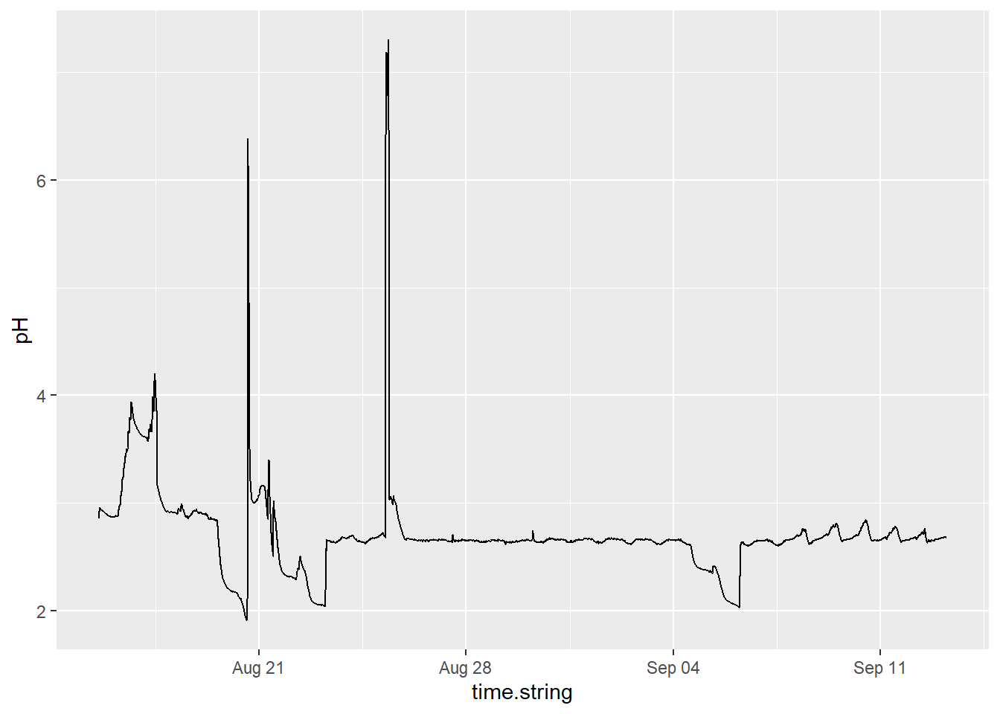
ggplot(sb, aes(time.string, pH)) + geom_line()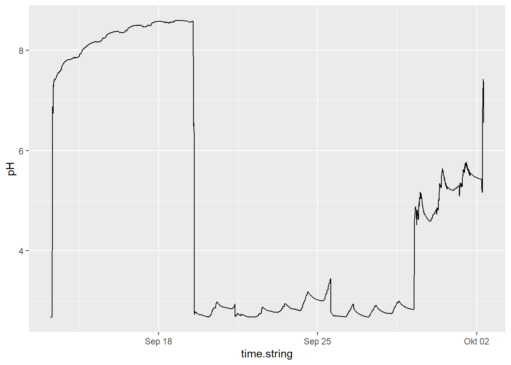
ggplot(aktuell, aes(time.string, pH)) + geom_line()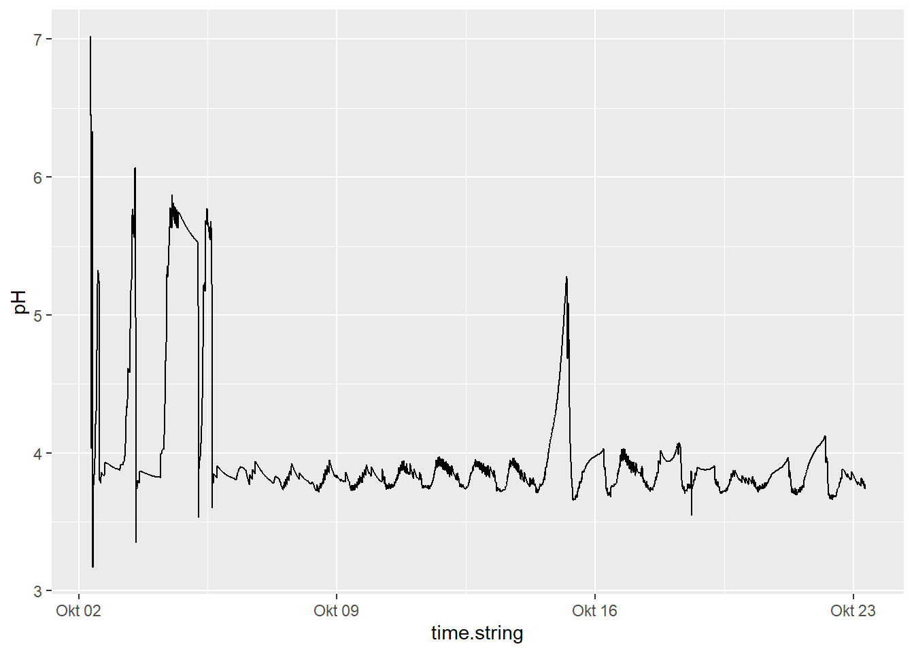
Plots um zu sehen, wie sich die Temperatur in den drei Experimenten entwickelt hat.
ggplot(ps, aes(time.string, TEMPERATURE)) + geom_line()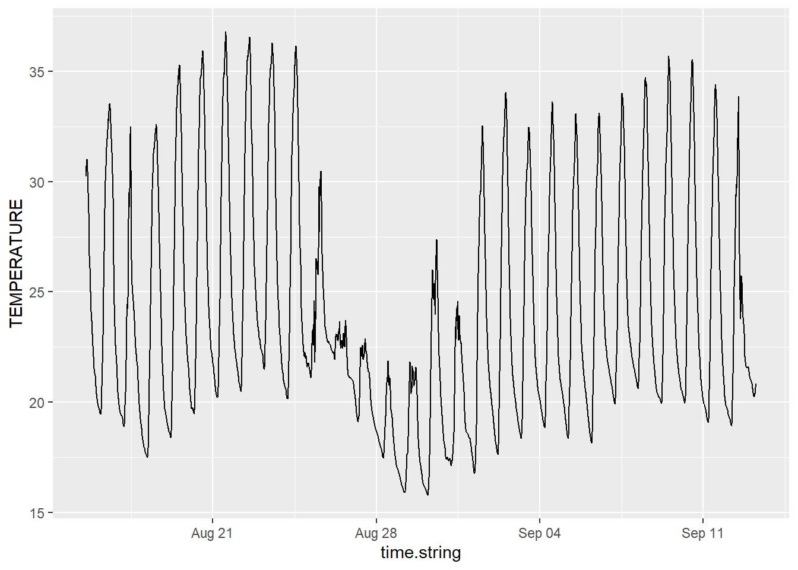
ggplot(sb, aes(time.string, TEMPERATURE)) + geom_line()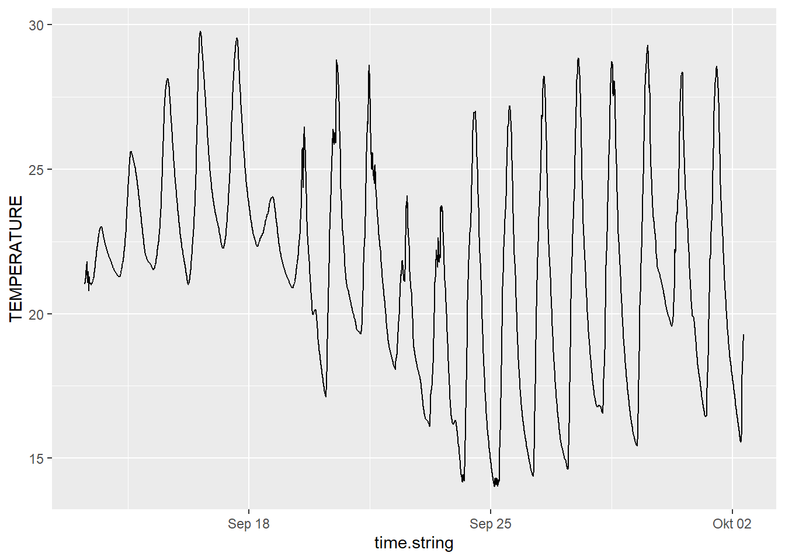
ggplot(aktuell, aes(time.string, TEMPERATURE)) + geom_line()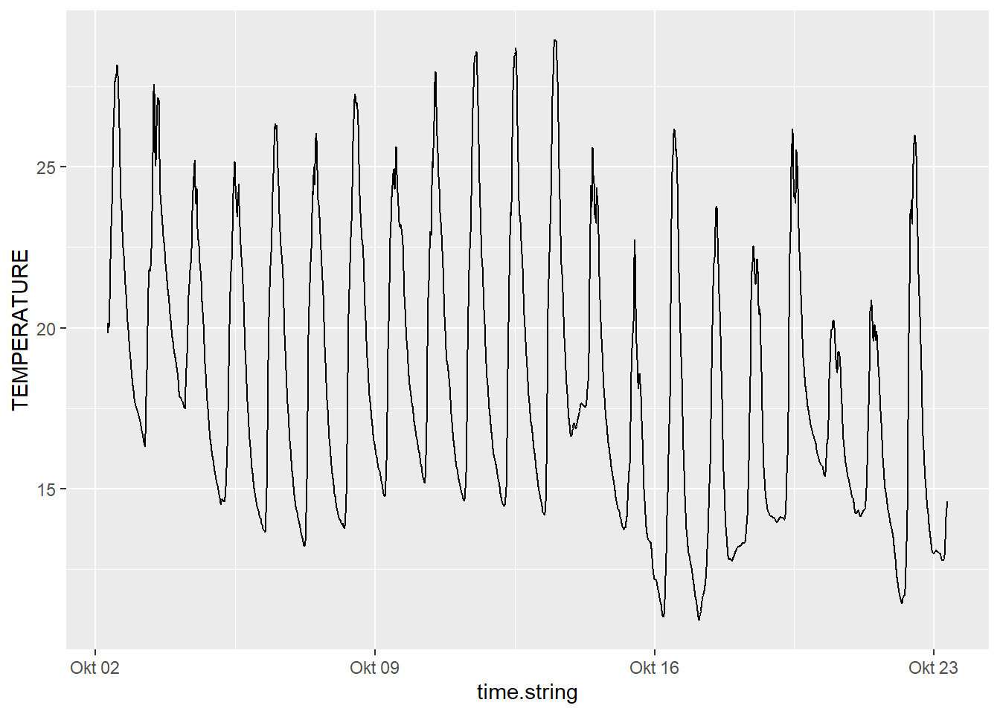
Neustes Experiment
Wir versuchen diese Daten so anzupassen, dass Auswertungen möglich werden. Dafür wird eine neue Dataframe mit jenen Spalten erstellt, welche wir auswerten möchten. Das Datum muss als solches formatiert werden, damit Analysen möglich werden.
ps_neu <- data.frame(DateTime = as.POSIXct(as.character(ps$time.string), format = "%Y-%m-%d %H:%M:%OS"))
ps_neu <- ps_neu |>
mutate(par1 = ps$PAR.1,
par2 = ps$PAR.2,
pardiff = par2 - par1,
temp = ps$TEMPERATURE,
pH = ps$pH,
daynight = as.factor(ps$daynight))Nun gruppieren wir die Daten nach Tag und Nacht, um bessere Aussagen über Zusammenhänge machen zu können.
sum_ps_neu <- ps_neu |>
group_by(daynight)Nun erstellen wir Plots um den Zusammenhang zwischen der Strahlung und der Temperatur zu sehen.
ggplot(sum_ps_neu, aes(temp, par2, color = daynight)) +
geom_point() +
geom_smooth(col = "black") +
stat_poly_line() +
stat_poly_eq(use_label(c("eq", "R2"))) 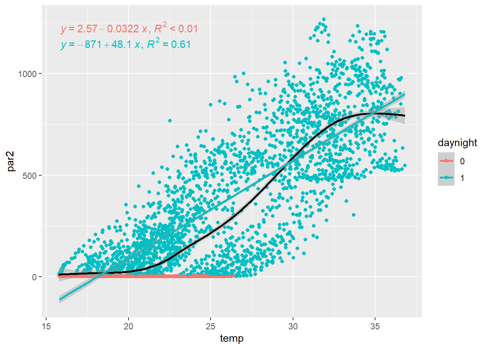
ggscatter(sum_ps_neu, x = "temp", y = "par2",
add = "reg.line", conf.int = TRUE,
cor.coef = TRUE, cor.method = "pearson" )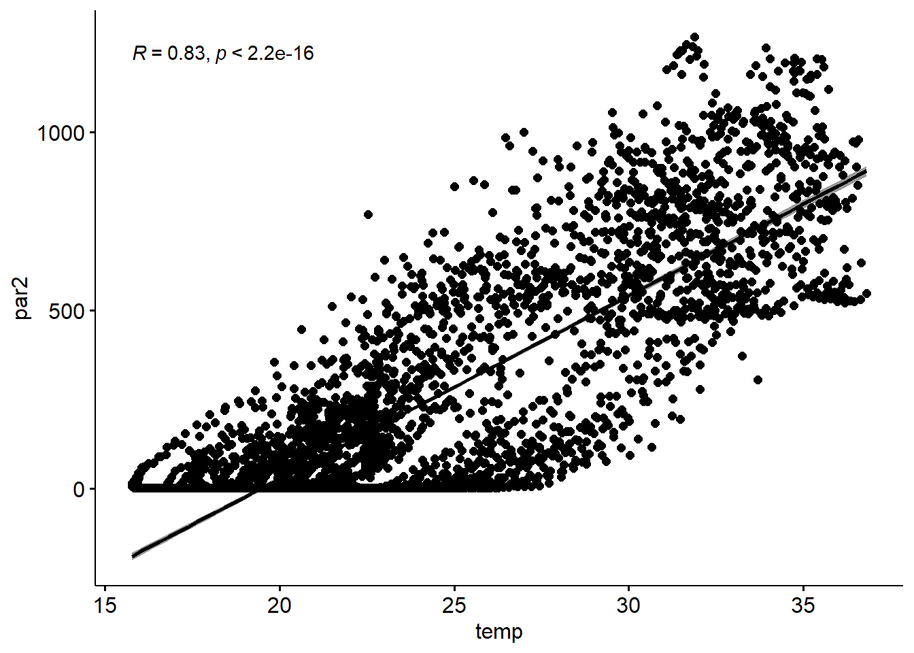
ggplot(sum_ps_neu, aes(temp, par1, color = daynight)) +
geom_point() +
geom_smooth(col = "black") +
stat_poly_line() +
stat_poly_eq(use_label(c("eq", "R2")))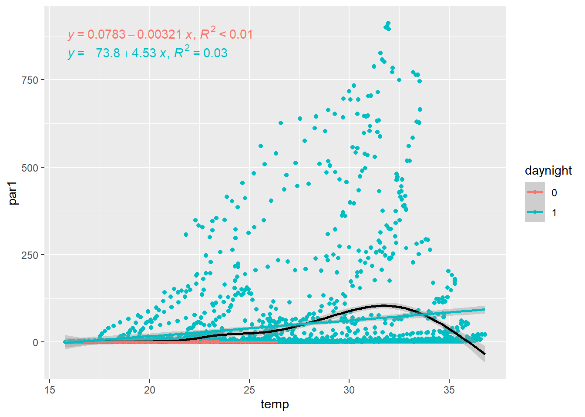
ggscatter(sum_ps_neu, x = "temp", y = "par1",
add = "reg.line", conf.int = TRUE,
cor.coef = TRUE, cor.method = "pearson" )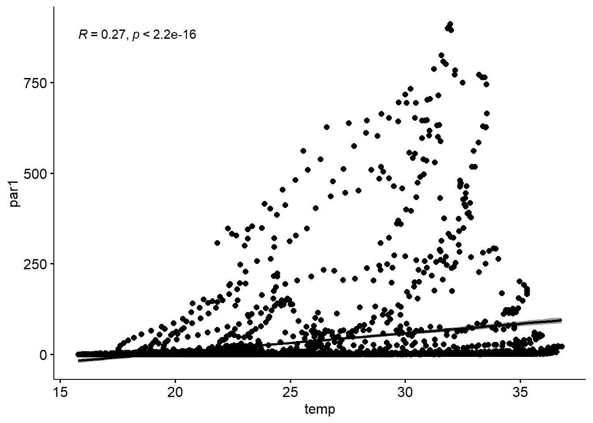
ggplot(sum_ps_neu, aes(temp, pardiff, color = daynight)) +
geom_point() +
geom_smooth(col = "black") +
stat_poly_line(geom = "smooth") +
stat_poly_eq(use_label(c("eq", "R2")))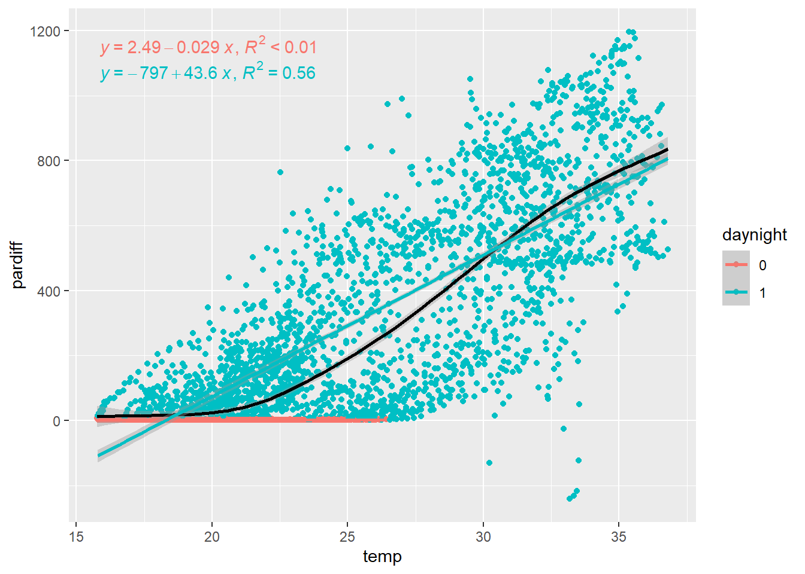
ggscatter(sum_ps_neu, x = "temp", y = "pardiff",
add = "reg.line", conf.int = TRUE,
cor.coef = TRUE, cor.method = "pearson" )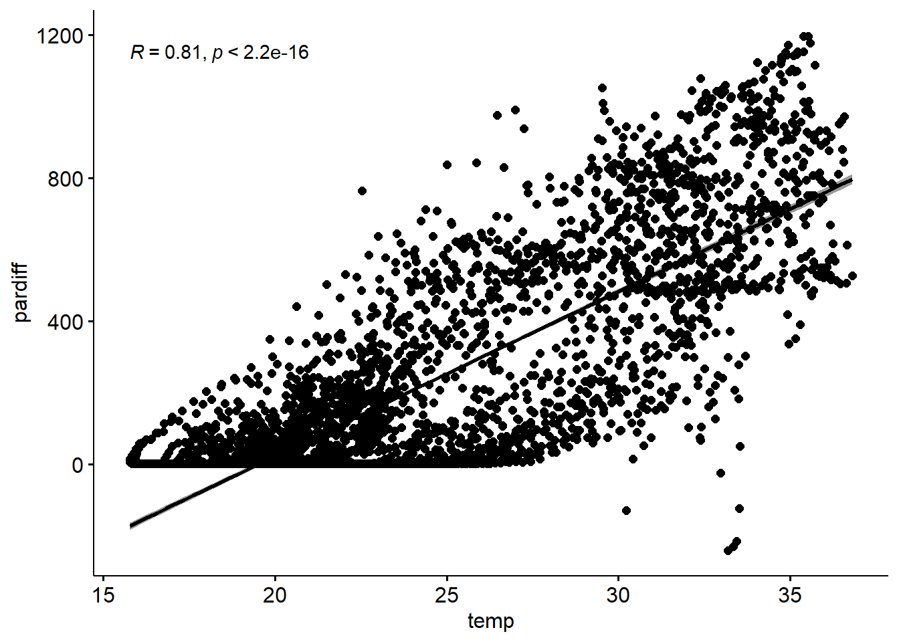